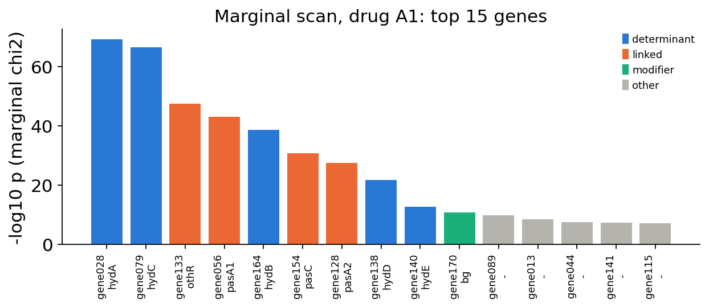
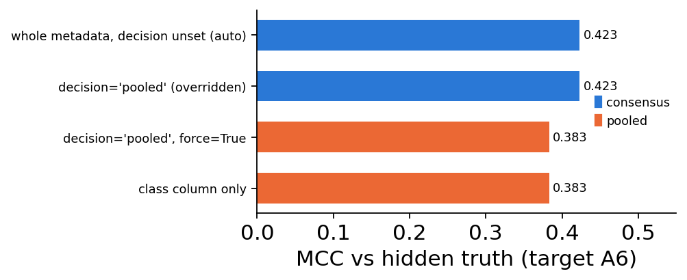

Genotype to resistance: trait determinants, effect modifiers and transfer to an unlabelled drug#
Bacterial gene presence/absence to a binary phenotype, with population structure taken into account
A bacterial pan-genome table says, for every isolate, which accessory genes it carries (1 = present, 0 = absent). Antimicrobial susceptibility testing gives a binary phenotype per isolate and drug: resistant (R) or susceptible (S). There are two common questions:
Which genes drive resistance to drug d? The answer should list only the genes that act. Linked genes, lineage markers and background loci should be left out.
What can we say about a drug that has no phenotypes yet? Here we have to borrow from related drugs that do have labels, and decide which of them can be trusted for the new one.
Bacterial genomes make both questions harder than they look:
Linkage / hitch-hiking. Resistance genes travel on plasmids and transposons. Every gene on the same element looks associated with the phenotype. This includes passenger genes with no function and determinants for other drug classes.
Population structure. Bacteria reproduce clonally. Each lineage has its own accessory-gene content and its own baseline resistance rate, so thousands of lineage-marker genes are associated with the phenotype without acting on it (Earle et al. 2016; Power et al. 2017).
Effect modification (epistasis). Some genes act only on a permissive background, for example a low-level enzyme that gives resistance only when an outer-membrane porin is lost. A main-effects model then credits the background locus and under-scores the genes that do the work.
Drugs that are similar but not the same. A combination of a beta-lactam with a beta-lactamase inhibitor is in the same class as the beta-lactam alone. Still, the inhibitor neutralises some enzymes, so a gene that confers resistance to the single agent may not confer it to the combination (Bush & Bradford 2016).
Step |
Function |
|---|---|
Find the background locus that modifies other genes’ effects |
|
Rank genes and choose the determinant set (conditional fit, modifier interactions, extended-BIC forward selection with genotype-PC covariates) |
|
Predict an unlabelled drug from labelled class-mates, pooled or by consensus, depending on mechanistic metadata |
|
What this tutorial does. We simulate a cohort of 3,000 isolates with 200 accessory genes in 8 lineages, plus phenotypes for seven drugs, so the true answer is known. The simulation includes every difficulty listed above. We run the three functions, check each result against the truth, and then show the failure modes we get when parts of the method are switched off. Gene and drug names are synthetic.
import time
import warnings
import numpy as np
import pandas as pd
import matplotlib.pyplot as plt
from matplotlib.patches import Patch
from scipy.stats import chi2, chi2_contingency
from sklearn.metrics import matthews_corrcoef, roc_auc_score
import omicverse as ov
ov.plot_set()
T0 = time.time()
# role colours: determinant / linked (hitch-hiker or passenger) / modifier / other
COL = {'determinant': '#2a78d6', 'linked': '#eb6834', 'modifier': '#1baf7a',
'other': '#b5b3ad'}
🔬 Starting plot initialization...
🧬 Detecting GPU devices…
🚫 No GPU devices found (CUDA/MPS/ROCm/XPU)
____ _ _ __
/ __ \____ ___ (_)___| | / /__ _____________
/ / / / __ `__ \/ / ___/ | / / _ \/ ___/ ___/ _ \
/ /_/ / / / / / / / /__ | |/ / __/ / (__ ) __/
\____/_/ /_/ /_/_/\___/ |___/\___/_/ /____/\___/
🔖 Version: 2.3.2 📚 Tutorials: https://omicverse.readthedocs.io/
✅ plot_set complete.
1. Principle#
Conditional logistic model. For isolate \(i\) with gene vector \(x_i\in\{0,1\}^p\) and phenotype \(y_i\in\{0,1\}\):
where \(z_{i1},\dots,z_{iK}\) are the top principal components of the genotype matrix. These PCs stand in for lineage, as in PCA correction for human GWAS (Price et al. 2006). Because all genes are in one model, a passenger that only travels with a determinant has \(\beta_j\approx 0\) once the determinant is in the model. The PCs absorb lineage-level differences in resistance rate.
Effect modifier. A background locus \(m\) modifies gene \(j\) when
effect_modifier_scan tries every gene as \(m\). For each candidate it uses
a likelihood-ratio (LR) test to compare the model with interactions against
the main-effects model, \(\mathrm{LR}=2(\ell_1-\ell_0)\sim\chi^2_{\mathrm{df}}\).
The top candidate is accepted if it passes Bonferroni at modifier_alpha.
Gene \(j\) is then scored by its log-odds in the stratum where it acts,
\(\max(|\beta_j|,|\beta_j+\gamma_j|)\). The modifier is scored only by its own
main effect \(|\beta_m|\): it is a background, not a determinant.
How many determinants? The data decide this through forward selection. Each step adds the gene with the largest likelihood gain given the genes already selected (main effect plus interaction with the modifier, with the PCs always in the model). To keep the steps fast, candidates are ranked with Rao’s score statistic (one fit per step). The exact LR is then computed for the top three. Selection stops at the first gene that fails the extended BIC (Chen & Chen 2008):
The \(2\gamma\log p\) term grows with the number of genes screened. Plain BIC (\(\mathrm{df}\log n\)) does not have it and is too lenient when \(p\) is large.
Transfer to an unlabelled drug. Write the labelled class-mates as \(s=1..S\) and the target as \(t\). Each source gives a model \(\hat p_s(x)\), and a pooled model \(\hat p_{\mathrm{pool}}(x)\) is fitted on all the source labels stacked together.
pooled: call R if \(\hat p_{\mathrm{pool}}(x)\ge 0.5\). This is the most efficient rule when the sources are mechanistically equivalent to the target.
consensus: call R only if \(\min_s \hat p_s(x)\ge 0.5\), so a determinant must act in every source. This is the safe rule when the target has an added component that no source has (for example a new inhibitor that may neutralise some enzymes).
Equivalence is judged only on mechanistically relevant metadata. These are
the number of molecules in the SMILES (.-separated, so a combination
product has 2) and columns that name an inhibitor, combination partner,
adjuvant or protecting agent. Other columns are recorded as incidental and
ignored.
2. Simulate a structured cohort with a known answer#
8 lineages. Each lineage has its own accessory-gene frequencies (\(\mathrm{Beta}(0.4,0.8)\) per lineage and gene) and its own baseline log-odds of resistance (\(\mathcal N(0,0.8^2)\)). This is the population structure.
Five enzyme genes
hydA–hydE. Their carriage rate also varies by lineage.hydA,hydBandhydCact on their own.hydDandhydEact only when the background locusbgis present (permissive background, e.g. porin loss).bghas no effect of its own.A plasmid.
hydAtravels withothR(85 %), the determinant for a class-B drug, and with two passengerspasA1/pasA2.hydChas a passengerpasC.Drugs. Class A has single agents
A1,A2andA4, and combinationsA3/A5(agent + inhibitor X) andA6(agent + a new inhibitor Z). Both inhibitors neutralisehydAandhydB.hydCis inhibitor-resistant. Class B has one drug,B1, conferred only byothR.Labels.
A1,A2,A3andB1are labelled, with about 10 % of isolates untested per drug.A4,A5andA6have no labels. Their true phenotypes are kept aside and used only to score the predictions.
The role genes sit at random columns with neutral IDs, so the method cannot use column order.
rng = np.random.default_rng(7)
n, p, n_lin = 3000, 200, 8
lineage = rng.integers(0, n_lin, n)
freq = rng.beta(0.4, 0.8, (n_lin, p))
X = (rng.random((n, p)) < freq[lineage]).astype(float)
roles = ['hydA', 'hydB', 'hydC', 'hydD', 'hydE', 'bg', 'othR', 'pasA1', 'pasA2', 'pasC']
col_of = dict(zip(roles, rng.choice(p, len(roles), replace=False)))
gene_ids = [f'gene{j:03d}' for j in range(p)]
name = {r: gene_ids[c] for r, c in col_of.items()} # role -> gene id
role_of = {v: k for k, v in name.items()} # gene id -> role
g = lambda r: X[:, col_of[r]]
carr = rng.uniform(0.05, 0.35, (5, n_lin)) # lineage-dependent carriage
for k, r in enumerate(['hydA', 'hydB', 'hydC', 'hydD', 'hydE']):
X[:, col_of[r]] = rng.random(n) < carr[k, lineage]
X[:, col_of['bg']] = rng.random(n) < rng.uniform(0.3, 0.8, n_lin)[lineage]
for r, src, rate, bgr in [('othR', 'hydA', 0.85, 0.05), ('pasA1', 'hydA', 0.75, 0.06),
('pasA2', 'hydA', 0.65, 0.08), ('pasC', 'hydC', 0.70, 0.06)]:
X[:, col_of[r]] = np.where(g(src) == 1, rng.random(n) < rate, rng.random(n) < bgr)
lin_eff = rng.normal(0, 0.8, n_lin)
base = -2.5 + lin_eff[lineage]
eta = {
'single': base + 3.0*g('hydA') + 2.5*g('hydB') + 3.0*g('hydC')
+ 3.0*g('hydD')*g('bg') + 2.5*g('hydE')*g('bg'),
'combo': base + 3.0*g('hydC') + 3.0*g('hydD')*g('bg') + 2.5*g('hydE')*g('bg'),
'other': base + 3.5*g('othR'),
}
draw = lambda e: (rng.random(n) < 1/(1 + np.exp(-e))).astype(float)
mech = {'A1': 'single', 'A2': 'single', 'A3': 'combo', 'A4': 'single',
'A5': 'combo', 'A6': 'combo', 'B1': 'other'}
isolates = [f'iso{i:04d}' for i in range(n)]
genomes = pd.DataFrame(X, columns=gene_ids, index=isolates)
Y_true = pd.DataFrame({d: draw(eta[m]) for d, m in mech.items()}, index=isolates)
labels = Y_true[['A1', 'A2', 'A3', 'B1']].copy() # A4/A5/A6: no labels at all
for c in labels:
labels.loc[rng.random(n) < 0.10, c] = np.nan
truth = {'A1': {name[r] for r in ['hydA', 'hydB', 'hydC', 'hydD', 'hydE']},
'A3': {name[r] for r in ['hydC', 'hydD', 'hydE']},
'B1': {name['othR']}}
print('genomes', genomes.shape, '| labelled drugs', list(labels.columns))
print('resistance rate (labelled):', labels.mean().round(2).to_dict())
pd.Series(name, name='gene id').to_frame().T
genomes (3000, 200) | labelled drugs ['A1', 'A2', 'A3', 'B1']
resistance rate (labelled): {'A1': 0.43, 'A2': 0.43, 'A3': 0.28, 'B1': 0.22}
hydA hydB hydC hydD hydE bg othR \
gene id gene028 gene164 gene079 gene138 gene140 gene170 gene133
pasA1 pasA2 pasC
gene id gene056 gene128 gene154
The lineage baselines produce strong lineage-level differences in
resistance, even among isolates that carry no hyd gene:
none_carried = (X[:, [col_of[r] for r in ['hydA', 'hydB', 'hydC', 'hydD', 'hydE']]].sum(1) == 0)
tab = (pd.DataFrame({'lineage': lineage, 'R': Y_true['A1'].to_numpy(), 'none': none_carried})
.query('none').groupby('lineage')['R'].agg(['mean', 'size']).round(3))
tab.columns = ['A1 resistance rate (no hyd gene)', 'n isolates']
tab.T
lineage 0 1 2 3 4 \
A1 resistance rate (no hyd gene) 0.008 0.013 0.123 0.027 0.056
n isolates 126.000 79.000 114.000 147.000 71.000
lineage 5 6 7
A1 resistance rate (no hyd gene) 0.046 0.051 0.223
n isolates 151.000 98.000 157.000
3. The naive approach: one gene at a time#
A marginal \(\chi^2\) test per gene against A1 is the first thing most
people try. The colour of each bar shows the true role of the gene.
def marginal_scan(G, y):
ok = y.notna()
out = []
for c in G.columns:
t = pd.crosstab(G.loc[ok, c], y[ok]).reindex(index=[0, 1], columns=[0, 1], fill_value=0)
out.append((c, chi2_contingency(t)[1]))
return pd.DataFrame(out, columns=['feature', 'p_value']).sort_values('p_value').reset_index(drop=True)
def role_class(f, drug):
if f in truth.get(drug, ()):
return 'determinant'
if f == name['bg']:
return 'modifier'
if role_of.get(f) in ('othR', 'pasA1', 'pasA2', 'pasC') or f in set().union(*truth.values()):
return 'linked'
return 'other'
marg = marginal_scan(genomes, labels['A1'])
marg['role'] = [role_of.get(f, '-') for f in marg.feature]
marg['class'] = [role_class(f, 'A1') for f in marg.feature]
top = marg.head(15)
fig, ax = plt.subplots(figsize=(8, 3.6))
ax.bar(range(len(top)), -np.log10(top.p_value.clip(lower=1e-300)),
color=[COL[c] for c in top['class']], width=0.8)
ax.set_xticks(range(len(top)))
ax.set_xticklabels([f"{f}\n{r}" for f, r in zip(top.feature, top.role)], rotation=90, fontsize=8)
ax.set_ylabel('-log10 p (marginal chi2)')
ax.set_title('Marginal scan, drug A1: top 15 genes')
ax.legend(handles=[Patch(color=COL[k], label=k) for k in ['determinant', 'linked', 'modifier', 'other']],
frameon=False, fontsize=8)
ax.spines[['top', 'right']].set_visible(False)
plt.tight_layout(); plt.show()
top[['feature', 'role', 'p_value', 'class']]


feature role p_value class
0 gene028 hydA 7.883060e-70 determinant
1 gene079 hydC 3.366713e-67 determinant
2 gene133 othR 3.182310e-48 linked
3 gene056 pasA1 8.209181e-44 linked
4 gene164 hydB 2.724397e-39 determinant
5 gene154 pasC 1.697851e-31 linked
6 gene128 pasA2 2.894374e-28 linked
7 gene138 hydD 2.151811e-22 determinant
8 gene140 hydE 2.747604e-13 determinant
9 gene170 bg 2.176084e-11 modifier
10 gene089 - 1.667255e-10 other
11 gene013 - 3.851086e-09 other
12 gene044 - 3.578320e-08 other
13 gene141 - 6.361801e-08 other
14 gene115 - 8.111894e-08 other
Reading the marginal scan. The determinants are near the top. Mixed in
with them are the plasmid partners of hydA (othR, pasA1, pasA2), the
passenger of hydC, the background locus bg, and below them a run of
lineage markers (“other”) with tiny p-values. A top-k list from this scan
would mix all five kinds of gene. The conditional analysis below separates
them.
4. Screening for an effect modifier#
effect_modifier_scan fits a main-effects model and keeps the
shortlist genes with the largest |coefficient|. Then, for every gene \(m\)
present in 5–95 % of isolates, it tests whether adding the interactions
\(x_m\cdot x_j\) improves the fit.
t = time.time()
scan = ov.genetics.effect_modifier_scan(genomes, labels['A1'])
print(f'{len(scan)} candidates screened in {time.time()-t:.1f} s')
scan['role'] = [role_of.get(f, '-') for f in scan.modifier]
scan.head(6)
200 candidates screened in 5.4 s
modifier loglik lr_stat df p_value frac_present \
0 gene170 -1082.393380 206.169122 29 1.275965e-28 0.525109
1 gene138 -1110.941285 149.073312 29 4.245559e-18 0.212154
2 gene140 -1141.801824 87.352235 29 9.252154e-08 0.184862
3 gene186 -1151.687374 66.316462 30 1.484624e-04 0.401747
4 gene034 -1149.715032 61.624239 30 5.828069e-04 0.340247
5 gene183 -1153.708098 60.450601 30 8.117066e-04 0.319505
lr_ratio_to_next role
0 1.383005 bg
1 1.706577 hydD
2 1.317203 hydE
3 1.076142 -
4 1.019415 -
5 1.025343 -
fig, ax = plt.subplots(figsize=(7, 3))
s = scan.head(20)
ax.bar(range(len(s)), s.lr_stat, width=0.8,
color=[COL[role_class(f, 'A1')] if f in role_of else COL['other'] for f in s.modifier])
ax.axhline(chi2.isf(1e-3/len(scan), scan.loc[0, 'df']),
color='#52514e', lw=1, ls='--', label='Bonferroni threshold (alpha=1e-3)')
ax.set_xticks(range(len(s)))
ax.set_xticklabels([f"{f} {role_of.get(f, '')}" for f in s.modifier], rotation=90, fontsize=8)
ax.set_ylabel('LR statistic'); ax.set_title('Effect-modifier screen, drug A1')
ax.legend(frameon=False, fontsize=8); ax.spines[['top', 'right']].set_visible(False)
plt.tight_layout(); plt.show()

Reading the screen. The top candidate is the simulated background
locus bg. The next two rows are hydD and hydE. They are also above the
Bonferroni line, and this is expected: an interaction is symmetric, so the
term \(x_{\mathrm{bg}}x_{\mathrm{hydD}}\) is also available when hydD is tried
as the “modifier”. As a modifier, though, hydD explains only its own
pair. bg explains both the hydD and the hydE interaction, so it has
the largest LR. Only the top row is used (Bonferroni over all candidates).
After it come the ordinary genes, with LRs close to each other
(lr_ratio_to_next ≈ 1).
Caveat. If a background acted on only one determinant, the determinant and the background would be interchangeable in this screen. The modifier would then be chosen by a small likelihood margin. In that case, report both rows and decide on biological grounds.
5. Ranking determinants and choosing the set#
trait_determinants runs the screen internally (modifier='auto'). It
then refits with modifier interactions, scores every gene, and runs the
extended-BIC forward selection with 10 genotype PCs as covariates
(select='ebic', n_pcs=10, the defaults).
t = time.time()
res_A1 = ov.genetics.trait_determinants(genomes, labels['A1'])
print(f'{time.time()-t:.1f} s | modifier = {res_A1.attrs["modifier"]} ({role_of.get(res_A1.attrs["modifier"])})'
f' | n_determinants = {res_A1.attrs["n_determinants"]}')
show = res_A1.head(8).copy()
show.insert(1, 'role', [role_of.get(f, '-') for f in show.feature])
show[['feature', 'role', 'score', 'is_determinant', 'beta_main', 'beta_with_modifier', 'acts_in',
'selection_step', 'selection_lr']].round(2)
6.1 s | modifier = gene170 (bg) | n_determinants = 5
feature role score is_determinant beta_main beta_with_modifier \
0 gene079 hydC 3.63 True 3.49 3.63
1 gene138 hydD 3.38 True 0.38 3.38
2 gene164 hydB 2.87 True 2.71 2.87
3 gene028 hydA 2.66 True 2.51 2.66
4 gene140 hydE 2.26 True 0.17 2.26
5 gene101 - 0.92 False 0.08 0.92
6 gene129 - 0.90 False 0.17 0.90
7 gene002 - 0.76 False -0.20 0.76
acts_in selection_step selection_lr
0 all 3.0 131.18
1 modifier_present 1.0 204.98
2 all 2.0 224.80
3 all 5.0 45.90
4 modifier_present 4.0 124.73
5 modifier_present NaN NaN
6 modifier_present NaN NaN
7 modifier_present NaN NaN
path = res_A1.attrs['selection_path']
path.assign(role=[role_of.get(f, '-') for f in path.feature]).round(3)
feature lr_stat df p_value n_candidates_left accepted role
0 gene138 204.980 2 0.000 40 True hydD
1 gene164 224.804 2 0.000 39 True hydB
2 gene079 131.177 2 0.000 38 True hydC
3 gene140 124.729 2 0.000 37 True hydE
4 gene028 45.903 2 0.000 36 True hydA
5 gene035 11.240 2 0.004 35 False -
n_lab, p_all = int(labels['A1'].notna().sum()), genomes.shape[1]
ebic_thr = 2*np.log(n_lab) + 2*np.log(p_all) # df = 2 (main + interaction) with a modifier
bic_thr = 2*np.log(n_lab)
fig, ax = plt.subplots(figsize=(6, 3))
ax.bar(range(len(path)), path.lr_stat, width=0.7,
color=[COL['determinant'] if a else COL['other'] for a in path.accepted])
ax.axhline(ebic_thr, color='#52514e', lw=1, ls='--', label=f'extended BIC ({ebic_thr:.1f})')
ax.axhline(bic_thr, color='#52514e', lw=1, ls=':', label=f'plain BIC ({bic_thr:.1f})')
ax.set_xticks(range(len(path)))
ax.set_xticklabels([f"{f}\n{role_of.get(f, '-')}" for f in path.feature], fontsize=8)
ax.set_ylabel('conditional LR at entry'); ax.set_title('Forward selection path, drug A1')
ax.legend(frameon=False, fontsize=8); ax.spines[['top', 'right']].set_visible(False)
plt.tight_layout(); plt.show()

Reading the result.
The modifier found is
bg. The five selected genes are exactlyhydA–hydE.hydDandhydEhaveacts_in = 'modifier_present': withbgabsent theirbeta_mainis small, and withbgpresent (beta_with_modifier) it is large.bgis flaggedis_modifierand is not a determinant, because its own main effect fails the drop-one extended-BIC test.The plasmid partners of
hydA(othR,pasA1,pasA2) are not selected: oncehydAis in the model they add nothing. Neither are the lineage markers, because the PCs absorb the lineage baselines.The selection path shows why five is the right size. True determinants enter with LR far above the threshold, and the first rejected candidate falls below it. It is the size of this gap, rather than a fixed top-k, that sets the number of determinants.
The same call on the inhibitor combination A3 and on the class-B drug
B1 returns those drugs’ own determinant sets:
rows = []
for d in ['A1', 'A3', 'B1']:
r = res_A1 if d == 'A1' else ov.genetics.trait_determinants(genomes, labels[d])
sel = list(r.loc[r.is_determinant, 'feature'])
rows.append({'drug': d, 'modifier': role_of.get(r.attrs['modifier'], r.attrs['modifier']),
'selected': ', '.join(role_of.get(f, f) for f in sel),
'exact match to truth': set(sel) == truth[d]})
pd.DataFrame(rows)
drug modifier selected exact match to truth
0 A1 bg hydC, hydD, hydB, hydA, hydE True
1 A3 bg hydD, hydC, hydE True
2 B1 None othR True
For A3, hydA and hydB drop out: the inhibitor neutralises them. othR
is the only determinant of B1, so the gene that was a hitch-hiker for A1
is a genuine determinant for another class. B1 has no modifier
(None) because no gene modifies othR.
6. Transfer to drugs without labels#
Drug metadata is usually a table: class, a SMILES string, sometimes the
combination partner, and assorted incidental columns. Pass the whole
table as groups. The SMILES below are toy strings, and only their
.-separated component count is used.
drug_meta = pd.DataFrame({
'drug_class': ['A', 'A', 'A', 'A', 'A', 'A', 'B'],
'generation': ['1', '2', '3', '2', '3', '4', '1'], # incidental
'smiles': ['O=C1CCN1C(=O)C', 'O=C1CCN1CC(=O)O', 'O=C1CCN1C(=O)C.O=C(O)C1CS(=O)(=O)C1',
'O=C1CCN1CCC(=O)O', 'O=C1CCN1CC(=O)O.O=C(O)C1CS(=O)(=O)C1',
'O=C1CCN1C(=O)C.OB1OCCC1', 'CC1=CC(=O)OC1'],
'inhibitor': ['none', 'none', 'inhX', 'none', 'inhX', 'inhZ', 'none'],
}, index=['A1', 'A2', 'A3', 'A4', 'A5', 'A6', 'B1'])
drug_meta.assign(labelled=drug_meta.index.isin(labels.columns)) # display only
drug_class generation smiles inhibitor \
A1 A 1 O=C1CCN1C(=O)C none
A2 A 2 O=C1CCN1CC(=O)O none
A3 A 3 O=C1CCN1C(=O)C.O=C(O)C1CS(=O)(=O)C1 inhX
A4 A 2 O=C1CCN1CCC(=O)O none
A5 A 3 O=C1CCN1CC(=O)O.O=C(O)C1CS(=O)(=O)C1 inhX
A6 A 4 O=C1CCN1C(=O)C.OB1OCCC1 inhZ
B1 B 1 CC1=CC(=O)OC1 none
labelled
A1 True
A2 True
A3 True
A4 False
A5 False
A6 False
B1 True
def evaluate(r, target):
yt = Y_true[target]
return {'target': target, 'requested': r['decision_requested'], 'decision': r['decision'],
'sources': ','.join(r['sources']),
'MCC': round(matthews_corrcoef(yt, r['call']), 3),
'AUROC': round(roc_auc_score(yt, r['proba']), 3),
'n_warnings': len(r['warnings'])}
results = {}
for tgt in ['A4', 'A5', 'A6']:
results[tgt] = ov.genetics.transfer_trait_predict(genomes, labels, tgt,
groups=drug_meta)
pd.DataFrame([evaluate(results[t], t) for t in results])
target requested decision sources MCC AUROC n_warnings
0 A4 auto pooled A1,A2 0.535 0.860 0
1 A5 auto pooled A3 0.461 0.840 0
2 A6 auto consensus A1,A2,A3 0.423 0.818 0
With decision='auto' (the default) each target gets a different rule, and
decision_reasons explains the choice:
for tgt in ['A4', 'A6']:
print(f'--- {tgt}')
for line in results[tgt]['decision_reasons']:
print(' *', line)
results['A6']['source_match']
--- A4
* sources share the target's drug_class and its relevant attributes ['inhibitor', 'n_components'] -> treated as mechanistically equivalent
* columns not treated as mechanistic (incidental): ['generation']
* decision 'pooled'
* label-free agreement: largest gap between source models on carriers of one determinant = 0.07 (gene079); overall source_call_disagreement = 0.275
--- A6
* the target differs from every labelled drug_class-mate on relevant attributes {'inhibitor': 'inhZ', 'n_components': 2} (e.g. an added component) -> determinants must act in all sources to be trusted
* columns not treated as mechanistic (incidental): ['generation']
* decision 'consensus'
* label-free agreement: largest gap between source models on carriers of one determinant = 0.63 (gene028); overall source_call_disagreement = 0.682
source inhibitor n_components relevant_match used
0 A1 none 1 False True
1 A2 none 1 False True
2 A3 inhX 2 False True
A4(single agent):A1andA2match it onn_components = 1andinhibitor = none. The differentgenerationvalue is recorded as incidental. Decision: pooled overA1+A2. The combinationA3is not used.A5(agent + inhibitor X):A3has the same partner, so the rule is pooled overA3alone.A6(agent + new inhibitor Z): no labelled class-mate has inhibitor Z, so the rule is consensus over all class-A sources. An isolate is called R only if theA1,A2andA3models all call it R.
For A6 we can check label-free whether the sources agree. The table below
shows, for the carriers of each strongly weighted gene, the fraction that
each source model calls R:
r6 = results['A6']
agree = r6['determinant_agreement'].head(6).copy()
agree.insert(1, 'role', [role_of.get(f, '-') for f in agree.feature])
display(agree.round(2))
disc = r6['discordant_features'].head(6).copy()
disc.insert(0, 'role', [role_of.get(f, '-') for f in disc.index])
disc.round(2)
feature role n_carriers called_A1 called_A2 called_A3 max_rate_gap
0 gene028 hydA 693 0.79 0.83 0.20 0.63
1 gene056 pasA1 666 0.72 0.76 0.21 0.56
2 gene164 hydB 541 0.72 0.77 0.25 0.52
3 gene172 - 359 0.48 0.52 0.26 0.26
4 gene033 - 1097 0.46 0.47 0.22 0.25
5 gene194 - 759 0.46 0.48 0.24 0.24
role A1 A2 A3 spread
gene164 hydB 2.16 2.42 0.07 2.35
gene028 hydA 2.32 2.57 0.51 2.06
gene101 - 0.28 0.62 -0.24 0.86
gene114 - -0.19 0.26 -0.43 0.69
gene008 - -0.01 0.03 0.67 0.68
gene157 - 0.06 -0.58 -0.11 0.64
print('leave-one-source-out validation inside the A6 sources:')
r6['validation'].round(3)
leave-one-source-out validation inside the A6 sources:
held_out trained_on n auroc mcc
0 A1 A2,A3 2748 0.848 0.493
1 A2 A1,A3 2713 0.827 0.468
2 A3 A1,A2 2716 0.752 0.334
Reading the transfer output.
determinant_agreement: carriers ofhydA(and ofhydBand the plasmid genes linked tohydA) are called R by theA1/A2models but mostly S by theA3model. The sources disagree abouthydA, which is the inhibitor neutralisation built into the simulation. This check needs no target labels.discordant_featuresshows the same thing at the coefficient level: the largest spread across the per-source coefficients is athydAandhydB.validation(leave one source out) shows that when the held-out source isA3the remaining single-agent models transfer poorly. This is further evidence that the class is not homogeneous.
Scored against the hidden truth, all three targets get a useful prediction.
The A6 consensus calls do not trust hydA/hydB. The next section
shows what happens when they are trusted.
carriers = (genomes[name['hydA']].eq(1) | genomes[name['hydB']].eq(1)) & \
genomes[[name['hydC']]].eq(0).all(axis=1) & \
~(genomes[[name['hydD'], name['hydE']]].eq(1).any(axis=1) & genomes[name['bg']].eq(1))
print(f'{carriers.sum()} isolates carry hydA/hydB but no determinant that acts under an inhibitor;')
print(f'true A6 resistance rate among them: {Y_true.loc[carriers, "A6"].mean():.2f}; '
f'called R by consensus: {r6["call"][carriers].mean():.2f}')
719 isolates carry hydA/hydB but no determinant that acts under an inhibitor;
true A6 resistance rate among them: 0.11; called R by consensus: 0.02
7. Pitfalls (executed)#
7a. Plain BIC without the lineage covariates admits lineage markers#
loose = ov.genetics.trait_determinants(genomes, labels['A1'], select='bic', n_pcs=0)
sel = list(loose.loc[loose.is_determinant, 'feature'])
extra = [f for f in sel if f not in truth['A1']]
lin_mean = pd.DataFrame(X, columns=gene_ids).groupby(lineage).mean() # carriage per lineage
print('selected:', len(sel), '| true determinants found:', len(set(sel) & truth['A1']),
'| extra genes:', extra)
pd.DataFrame({'gene': extra,
'role': [role_of.get(f, 'none (not causal)') for f in extra],
'corr(lineage carriage, lineage baseline)':
[round(np.corrcoef(lin_mean[f], lin_eff)[0, 1], 2) for f in extra],
'selection_lr': loose.set_index('feature').loc[extra, 'selection_lr'].round(1).to_numpy()})
selected: 9 | true determinants found: 5 | extra genes: ['gene115', 'gene099', 'gene156', 'gene090']
gene role corr(lineage carriage, lineage baseline) \
0 gene115 none (not causal) -0.51
1 gene099 none (not causal) 0.61
2 gene156 none (not causal) -0.44
3 gene090 none (not causal) -0.53
selection_lr
0 25.8
1 47.9
2 23.0
3 30.0
The extra genes are non-causal. Their carriage across the 8 lineages is correlated with the lineages’ baseline resistance (\(|r|\approx 0.4\)–\(0.6\)). They are lineage markers that stand in for the lineage effect, which nothing else in the model explains. Their LRs (about 23–48) clear plain BIC (\(\mathrm{df}\log n\approx 16\)). Which part of the default protects against them, the penalty or the PCs? The ablation below answers this:
abl = []
for sel_, npc in [('bic', 0), ('ebic', 0), ('bic', 10), ('ebic', 10)]:
r = loose if (sel_, npc) == ('bic', 0) else \
ov.genetics.trait_determinants(genomes, labels['A1'], select=sel_, n_pcs=npc)
s_ = set(r.loc[r.is_determinant, 'feature'])
abl.append({'select': sel_, 'n_pcs': npc, 'n_selected': len(s_),
'true found': len(s_ & truth['A1']), 'extra (non-causal)': len(s_ - truth['A1'])})
pd.DataFrame(abl)
select n_pcs n_selected true found extra (non-causal)
0 bic 0 9 5 4
1 ebic 0 7 5 2
2 bic 10 5 5 0
3 ebic 10 5 5 0
Without PCs, the extended-BIC penalty alone still lets in two of the four
lineage markers. With PCs, plain BIC is enough in this cohort of 200 genes. The
\(\log p\) term matters more when tens of thousands of genes or unitigs are
screened. The defaults (select='ebic', n_pcs=10) combine both
safeguards and give the exact set (section 5).
7b. Ignoring the effect modifier#
nomod = ov.genetics.trait_determinants(genomes, labels['A1'], modifier=None)
a, b = res_A1.set_index('feature'), nomod.set_index('feature')
genes_cmp = [name[r] for r in ['hydA', 'hydB', 'hydC', 'hydD', 'hydE', 'bg']]
pd.DataFrame({'role': [role_of[f] for f in genes_cmp],
'true log-odds (where it acts)': [3.0, 2.5, 3.0, 3.0, 2.5, 0.0],
'score, modifier=auto': a.loc[genes_cmp, 'score'].round(2).to_numpy(),
'acts_in, auto': a.loc[genes_cmp, 'acts_in'].to_numpy(),
'rank, auto': a.loc[genes_cmp, 'rank'].to_numpy(),
'score, modifier=None': b.loc[genes_cmp, 'score'].round(2).to_numpy(),
'rank, None': b.loc[genes_cmp, 'rank'].to_numpy(),
'determinant, None': b.loc[genes_cmp, 'is_determinant'].to_numpy()},
index=genes_cmp)
role true log-odds (where it acts) score, modifier=auto \
gene028 hydA 3.0 2.66
gene164 hydB 2.5 2.87
gene079 hydC 3.0 3.63
gene138 hydD 3.0 3.38
gene140 hydE 2.5 2.26
gene170 bg 0.0 0.33
acts_in, auto rank, auto score, modifier=None rank, None \
gene028 all 4 2.32 2
gene164 all 3 2.16 3
gene079 all 1 2.93 1
gene138 modifier_present 2 1.65 4
gene140 modifier_present 5 1.10 5
gene170 is_modifier 69 0.97 6
determinant, None
gene028 True
gene164 True
gene079 True
gene138 True
gene140 True
gene170 False
With main effects only, the selection still finds the five genes in this
cohort. The effect sizes are wrong, though. hydD and hydE get one
log-odds averaged over isolates with and without bg (about half of the
true 3.0 / 2.5). They drop to the bottom of the ranking and lose the
information that they act only with bg (acts_in). In a cohort where
fewer isolates carry the background, or where the modified effects are
weaker, the averaged effect can fall below the selection threshold.
Meanwhile bg absorbs part of the signal. Its main effect triples (score
0.33 → 0.97) and it moves from rank 69 to rank 6, just below the selection
threshold here. In a less favourable cohort it would be admitted as a
“determinant”. Keep the default modifier='auto'. If the screen finds no
modifier (as for B1), the result is the same as with modifier=None.
7c. Forcing decision='pooled' when the target has an added component#
with warnings.catch_warnings(record=True) as w:
warnings.simplefilter('always')
r_req = ov.genetics.transfer_trait_predict(genomes, labels, 'A6', groups=drug_meta,
decision='pooled')
r_forced = ov.genetics.transfer_trait_predict(genomes, labels, 'A6', groups=drug_meta,
decision='pooled', force=True)
print('requested pooled ->', r_req['decision'], '|', r_req['warnings'][0][:110], '...')
print('forced pooled ->', r_forced['decision'], '| warnings:', len(r_forced['warnings']))
for m in r_forced['warnings']:
print(' *', m[:140])
print(f'source_call_disagreement = {r_forced["source_call_disagreement"]:.2f}')
requested pooled -> consensus | decision='pooled' was requested but the metadata shows the target differs from every source (see source_match) ...
forced pooled -> pooled | warnings: 2
* decision='pooled' was FORCED although the metadata shows the target differs from every source (see source_match); determinants that act in s
* the per-source models disagree on 68.2% of the samples any source calls positive (inconsistent determinant effects, see discordant_features)
source_call_disagreement = 0.68
7d. Passing only a class column as metadata#
with warnings.catch_warnings(record=True):
warnings.simplefilter('always')
r_cls = ov.genetics.transfer_trait_predict(genomes, labels, 'A6',
groups=dict(zip(drug_meta.index, drug_meta.drug_class)))
print(r_cls['decision'], r_cls['sources'])
print('warning:', r_cls['warnings'][0][:160], '...')
pooled ['A1', 'A2', 'A3']
warning: the metadata given has no mechanistically relevant attribute besides the group (SMILES / component count / inhibitor / combination), so whether the sources are ...
cmp = pd.DataFrame([
{**evaluate(results['A6'], 'A6'), 'setting': 'whole metadata, decision unset (auto)'},
{**evaluate(r_req, 'A6'), 'setting': "decision='pooled' (overridden)"},
{**evaluate(r_forced, 'A6'), 'setting': "decision='pooled', force=True"},
{**evaluate(r_cls, 'A6'), 'setting': 'class column only'},
])
cmp['R-call rate, hydA/B-only carriers'] = [round(r['call'][carriers].mean(), 2)
for r in (results['A6'], r_req, r_forced, r_cls)]
cmp = cmp[['setting', 'decision', 'sources', 'MCC', 'AUROC', 'R-call rate, hydA/B-only carriers', 'n_warnings']]
display(cmp)
fig, ax = plt.subplots(figsize=(6.5, 2.8))
ax.barh(range(len(cmp))[::-1], cmp.MCC, height=0.6,
color=[COL['determinant'] if d == 'consensus' else COL['linked'] for d in cmp.decision])
ax.set_yticks(range(len(cmp))[::-1]); ax.set_yticklabels(cmp.setting, fontsize=8)
for k, v in enumerate(cmp.MCC):
ax.text(v + 0.005, len(cmp) - 1 - k, f'{v:.3f}', va='center', fontsize=8)
ax.set_xlabel('MCC vs hidden truth (target A6)')
ax.set_xlim(0, cmp.MCC.max() * 1.3)
ax.legend(handles=[Patch(color=COL['determinant'], label='consensus'), Patch(color=COL['linked'], label='pooled')],
frameon=False, fontsize=8, loc='center right'); ax.spines[['top', 'right']].set_visible(False)
plt.tight_layout(); plt.show()
setting decision sources MCC AUROC \
0 whole metadata, decision unset (auto) consensus A1,A2,A3 0.423 0.818
1 decision='pooled' (overridden) consensus A1,A2,A3 0.423 0.818
2 decision='pooled', force=True pooled A1,A2,A3 0.383 0.791
3 class column only pooled A1,A2,A3 0.383 0.791
R-call rate, hydA/B-only carriers n_warnings
0 0.02 0
1 0.02 1
2 0.34 2
3 0.34 2


Reading the pitfalls.
A requested
'pooled'that contradicts the metadata is switched to'consensus'with aUserWarning. Onlyforce=Truekeeps it. The forced pooled model calls about a third of thehydA/hydB-only carriers resistant, although under inhibitor Z only about one in ten is, and MCC drops.source_call_disagreementand the second warning flag the problem without any target labels.Passing only the class removes the evidence. The function cannot see that
A6has an added component, warns that equivalence cannot be checked, pools all class-mates, and makes the same mistake as the forced pooled run. Pass the whole metadata table, leavedecisionunset, and printr['warnings'].The opposite mistake also costs accuracy. Consensus is not a free safety margin. When the sources really are equivalent (
A4), pooling uses all labels, and taking the per-source minimum only loses sensitivity (next cell). That is why'auto'pools whenever the relevant metadata match.source_call_disagreementis not zero even for equivalent sources (about 0.27 forA1vsA2when predictingA4, against 0.68 forA6), because isolates near the 0.5 threshold flip between two models fitted on noisy labels. Treat it as a comparison between targets, not as an absolute test.
r4c = ov.genetics.transfer_trait_predict(genomes, labels, 'A4', groups=drug_meta, decision='consensus')
pd.DataFrame([evaluate(results['A4'], 'A4'), evaluate(r4c, 'A4')])
target requested decision sources MCC AUROC n_warnings
0 A4 auto pooled A1,A2 0.535 0.860 0
1 A4 consensus consensus A1,A2 0.512 0.855 0
print(f'total runtime {time.time()-T0:.0f} s')
total runtime 50 s
8. Summary#
Question |
Call |
Key outputs |
|---|---|---|
Is there a background locus? |
|
|
Which genes drive the trait, and how many? |
|
|
What about a drug without labels? |
|
|
Practical notes:
Use
direction='risk'when only resistance-conferring genes are wanted. A selected gene whose conditional effect is protective is then not flagged.The PCs are computed from the genotype matrix. With very few lineages or very small cohorts, lower
n_pcs. When thousands of genes are screened, keepselect='ebic'.The modifier screen tests one background locus. Several independent modifiers, or higher-order epistasis, need a dedicated model.
Transfer can only be as good as the metadata. If nothing in the table separates the target from its sources,
'auto'pools. In that case, inspectdeterminant_agreement/discordant_featuresand choosedecision='consensus'explicitly if a determinant is split across sources.
9. References#
Chen J., Chen Z. (2008). Extended Bayesian information criteria for model selection with large model spaces. Biometrika 95(3):759–771. doi:10.1093/biomet/asn034
Price A. L. et al. (2006). Principal components analysis corrects for stratification in genome-wide association studies. Nature Genetics 38(8):904–909. doi:10.1038/ng1847
Rao C. R. (1948). Large sample tests of statistical hypotheses concerning several parameters with applications to problems of estimation. Mathematical Proceedings of the Cambridge Philosophical Society 44(1):50–57. doi:10.1017/S0305004100023987
Earle S. G. et al. (2016). Identifying lineage effects when controlling for population structure improves power in bacterial association studies. Nature Microbiology 1:16041. doi:10.1038/nmicrobiol.2016.41
Lees J. A. et al. (2016). Sequence element enrichment analysis to determine the genetic basis of bacterial phenotypes. Nature Communications 7:12797. doi:10.1038/ncomms12797
Lees J. A., Galardini M., Bentley S. D., Weiser J. N., Corander J. (2018). pyseer: a comprehensive tool for microbial pangenome-wide association studies. Bioinformatics 34(24):4310–4312. doi:10.1093/bioinformatics/bty539
Power R. A., Parkhill J., de Oliveira T. (2017). Microbial genome-wide association studies: lessons from human GWAS. Nature Reviews Genetics 18(1):41–50. doi:10.1038/nrg.2016.132
Cordell H. J. (2002). Epistasis: what it means, what it doesn’t mean, and statistical methods to detect it in humans. Human Molecular Genetics 11(20):2463–2468. doi:10.1093/hmg/11.20.2463
Bush K., Bradford P. A. (2016). β-Lactams and β-lactamase inhibitors: an overview. Cold Spring Harbor Perspectives in Medicine 6(8):a025247. doi:10.1101/cshperspect.a025247
Pan S. J., Yang Q. (2010). A survey on transfer learning. IEEE Transactions on Knowledge and Data Engineering 22(10):1345–1359. doi:10.1109/TKDE.2009.191